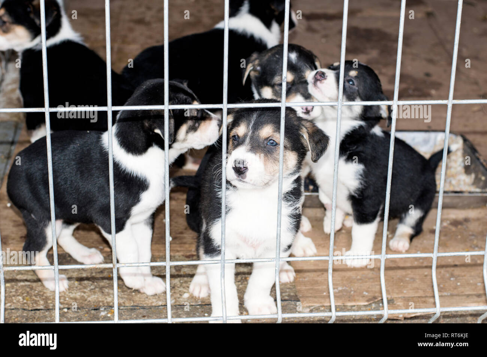

¿Alguna vez te preguntaste cómo adoptar a un perro? Llevar un perro a tu vida mediante la adopción puede significar la propuesta de salvar la vida de un perro que ha sido abandonado o maltratado. Se puede encontrar perros de todas las razas y edades para adopción canina. Esta última se puede realizar en una variedad de lugares, incluyendo los centros de rescate de razas, refugios para animales en donde no se practica la eutanasia o programas de cuidado
Si ya has valorado todos estos aspectos y decides seguir adelante con la adopción, lo primero que debes hacer es informarte de cómo adoptar perros, conociendo las vías y los condicionantes para hacerlo, así como los requisitos para adoptar un perro. Actualmente, existen múltiples protectoras, refugios, albergues, asociaciones y otras entidades sin ánimo de lucro de carácter local, que ofrecen la posibilidad de adoptar perros de diferentes edades, tamaño, razas y características. La mayoría de ellas disponen de una web que te permite conocer los distintos perfiles de perros en adopción (edad, tamaño, historia, carácter), e incluso algunas de ellas ofrecen la opción de que puedas filtrar la búsqueda según los parámetros que hayas preestablecido. .Si la entidad seleccionada está cerca de tu localidad, te recomendamos que realices una visita para conocer a los perros y recibir un asesoramiento más personalizado. Piensa que muchas protectoras ofrecen la posibilidad de que puedas pasear al perro escogido o acogerlo de forma temporal antes de formalizar la adopción, con el fin de que puedas valorar vuestro nivel de afinidad y bienestar conjunto.